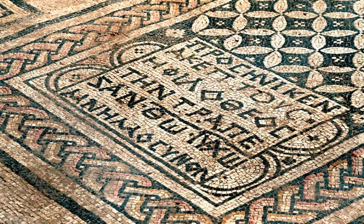

Megiddo Church

- Find Name
- Megiddo Church
- Historical Period
- Roman
- Artifact Date
- c. AD 230
- Date Discovered
- 2005
- Discovery Location
- Megiddo Prison, Israel
- Current Location
- Megiddo, Israel
- Timeline Era
- Early Church
- Description
- A third-century Christian meeting hall uncovered in 2005 during construction work at Megiddo Prison, excavated by Yotam Tepper. Its mosaic floor carries a Greek inscription 'to God Jesus Christ,' alongside the names of donors including a Roman centurion — the earliest known church building in Israel and one of the earliest written confessions of Christ's divinity.
- Biblical Significance
- Within two hundred years of the resurrection, believers — including a Roman officer — were meeting in a plain hall and writing on the floor that Jesus is God. Long before creeds and councils, the church's faith was already carved in stone: not merely a good teacher, but God himself, worthy of an offering table.
- Evidence Class
- Contextual
- Interpretations
- Scholars agree the hall and its ‘God Jesus Christ’ mosaic are third-century; the building’s identification as a church (rather than a prayer hall) rests on the inscription and the table’s likely use.
- Scripture Illuminated
- Related Books